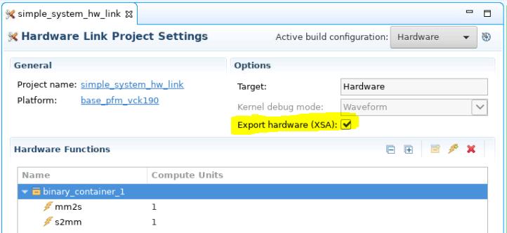

AI Engine DevelopmentSee Vitis™ Development Environment on xilinx.com See Vitis™ AI Development Environment on xilinx.com |
Introduction - System Integration¶
In this section of the tutorial, you will learn how to add PL kernels in HLS into the system project and build the whole system.
Step 1. Modify the Graph for Use in Hardware Build¶
You now have a working application to be run on the AI Engine array. What you need now is to modify the AI Engine graph to be used in hardware and connect the AI Engine array to the PL using the Vitis compiler (V++).
The main function in project.cpp will not be used in the hardware run, so you need to add a switch (#if defined(...)) so that main will not be taken into account for the hardware build.
#if defined(__AIESIM__) || defined(__X86SIM__) || defined(__ADF_FRONTEND__)
int main(void) {
mygraph.init();
mygraph.run(4);
mygraph.end();
return 0;
}
#endif
Step 2. Add PL Kernels¶
In this example, HLS kernels are used which bridge between memory and the AXI4-Stream interface to input and output data from memory.
The
mm2skernel reads data from memory and inputs it to the AI Engine array.The
s2mmkernel receives output data from the AI Engine array and writes it to memory.
Open the Vitis IDE and select the same workspace as the AI Engine application project. Right-click the simple_application_system project and select Add Hw Kernel Project.
Name the project hw-kernels and click Finish to create the project.
Right-click the hw-kernels project and click import sources. Browse into the
srcfolder and select themm2s.cppands2mm.cppfiles.In the hw-kernels.prj page, click on the lightning icon (Add HW function) icon and select both functions (
mm2sands2mm) as hardware functions.

Step 3. Configure Hardware Linking Project¶
Now that you have imported the kernels, you need to tell the Vitis linker how to connect everything together.
In the simple_application_system_hw_link.prj page, enable Export hardware (XSA).

Now you need to tell the Vitis compiler about the connectivity of the system. This step is done using a configuration file. Create a
connectivity.cfgfile with a text editor and add the following lines.
[connectivity]
stream_connect=mm2s_1.s:ai_engine_0.mygraph_in
stream_connect=ai_engine_0.mygraph_out:s2mm_1.s
Note that as per the Vitis Unified Software Platform Documentation: Application Acceleration Development (UG1393), the naming convention for the compute units (or kernel instances) are <kernel>_#, where # indicates the CU instance. Thus the CU names built corresponding to the kernels mm2s and s2mm in your project are respectively mm2s_1 and s2mm_1.
The stream_connect option is defined as <compute_unit_name>.<kernel_interface_name>:<compute_unit_name>.<kernel_interface_name>.
For example, to connect the AXI4-Stream interface of the mm2s_1 (compute unit name) called s (kernel interface name) to the mygraph_in (interface name) input of the graph in the ai_engine_0 (compute unit name) IP you need the following option: stream_connect=mm2s_1.s:ai_engine_0.mygraph_in.
Right-click the simple_application_system_hw_link and click import sources. Select the
connectivity.cfgfile created and add it to the simple_application_system_hw_link folder.In the simple_application_system_hw_link.prj page, right-click the binary container and click Edit v++ options.
Add the following option in the V++ command line options section to link your configuration file:
--config ../connectivity.cfg
Step 4. Build the System¶
Select the simple_application_system project and click on the hammer icon to build it. The compilation process takes some time to finish. The underlying AI Engine application project, hardware kernel project, and hardware linking project are compiled one after another. The system should build successfully with no error.

You can open the generated Vivado project in
<workspace>/simple_system_hw_link/Emulation-HW/binary_container_1.build/link/vivado/vpl/prjto take a look at the compilation result. You can see that the Vitis compiler added the two HLS IP (mm2sands2mm) and connected them to the memory (NoC) and AI Engine IP.
In the next step, you will create a PS bare-metal application and run the system with it.
Licensed under the Apache License, Version 2.0 (the “License”); you may not use this file except in compliance with the License. You may obtain a copy of the License at
http://www.apache.org/licenses/LICENSE-2.0
Unless required by applicable law or agreed to in writing, software distributed under the License is distributed on an “AS IS” BASIS, WITHOUT WARRANTIES OR CONDITIONS OF ANY KIND, either express or implied. See the License for the specific language governing permissions and limitations under the License.
Copyright© 2020–2021 Xilinx
XD018